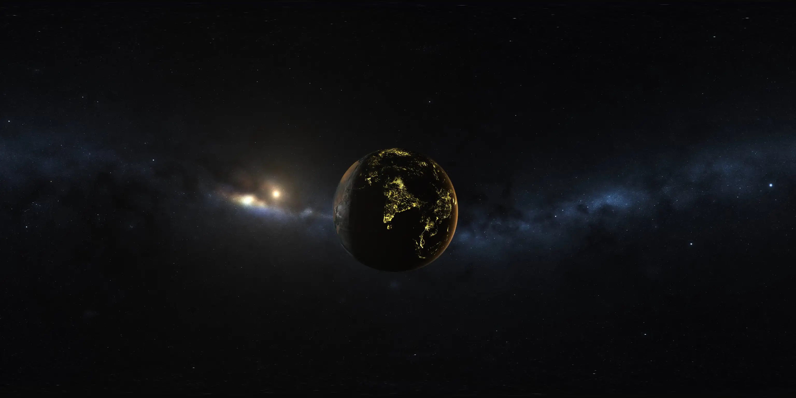

Stars drift toward you from deep space. Catch as many as you can in 60 seconds. Gold stars are worth 5!
Headset: press VR, then point and pull the trigger. Computer: drag to look, click to catch. Phone: move your phone or drag to look, tap to catch.
